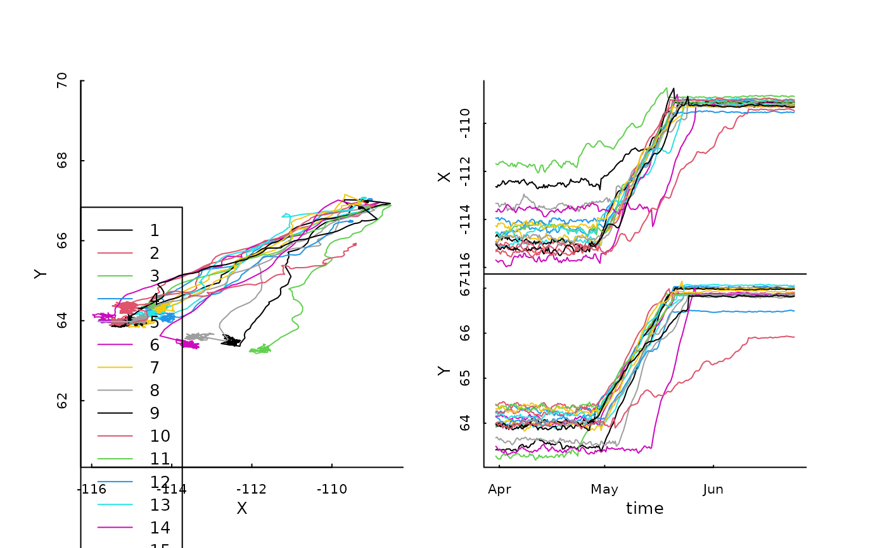
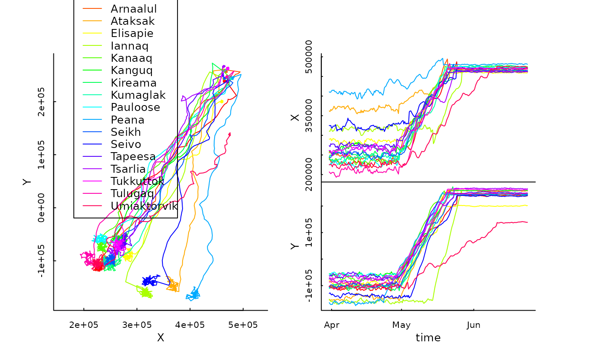

simulated_migrations.RdSimulated migration data provided to illustrate some of the features of the TuktuTools package. Two objects are loaded:
simulated_migrations is a data frame with Lat-Long coordinates,simulated_migrations.sf is a georeferenced simple feature object.data(simulated_migrations)data frame with the following columns: #'
Numberic ID of animal
Name of animal
Date and time of each GPS location (POSIX)
Coordinates locations in WGS84
simple feature geometry
Gurarie et al. (2019) Tactical departures and strategic arrivals: Divergent effects of climate and weather on caribou spring migrations. Ecosphere 10.12 (2019): e02971.
Gurarie & Cheraghi (2017). marcher: Migration and Range Change Estimation in R. R package version 0.0-2,
These are simulated data of 18 caribou over the period of a
spring migration in 2014, with data from March 31 through June 24. The
simulations were generated using statistical summaries of spring migration
of Bathurst caribou in 2014 reported by Gurarie et al. (2019). The tracks
were generated via some modifications of the simulate_shift
function in the marcher packages.
# load the data
data(simulated_migrations)
# use scan tracks to plot
scan_tracks(simulated_migrations, legend = TRUE)

# nicer version with the simple feature
simulated_migrations.sf %>%
scan_tracks(id.col = "Name", colors = rainbow(18),
legend= TRUE, legend.pos = "topleft")

# use mapview to see the tracks in projection
require(mapview)
simulated_migrations.sf %>% group_by(Name) %>%
summarize(do_union=FALSE) %>% st_cast("LINESTRING") %>%
mapview